Mockingbird — User Guide
A complete walkthrough of everything you can do in the Mockingbird portal as an SV_TEAM user — creating projects, uploading specs, generating stubs, testing them locally, and deploying to AWS. Every screenshot below is from the actual running application.
Logging in
Open the portal URL your team gave you and sign in with your username and password.
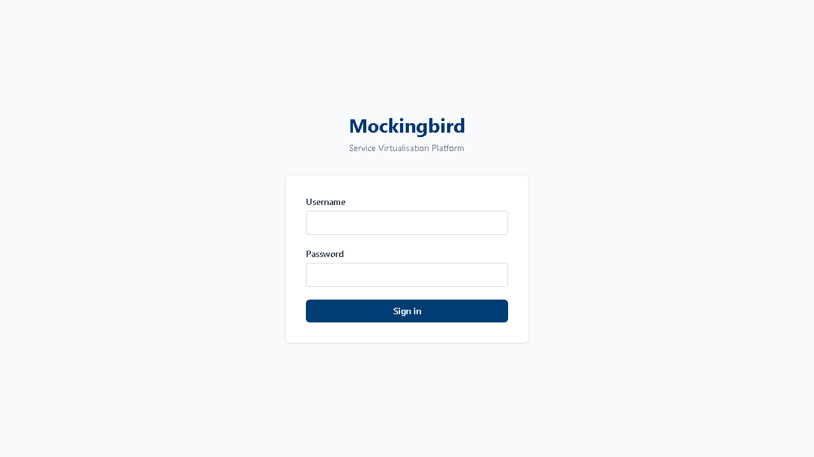
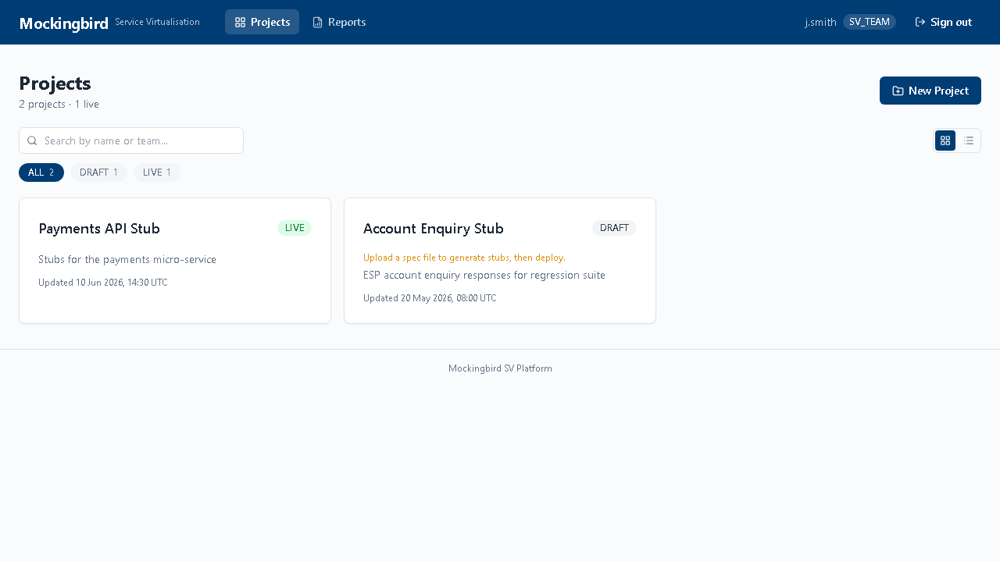
Dashboard — your projects
The dashboard lists every project you have access to, with live status badges, search, status filters, and a grid/list view toggle.

- Search — filters by project name or team as you type.
- Status pills — click a status (e.g.
LIVE) to filter the list to just those projects. - Grid / List toggle — the two icons top-right of the search bar switch views.
- Archived projects are hidden from this list automatically — see Edit & archive.
Creating a project
- Click New Project on the dashboard.
- Fill in the project name, team, environment (TEST/STAGING/PROD), and expected TPS — this sizes the AWS instance used when you deploy.
- Click Create.

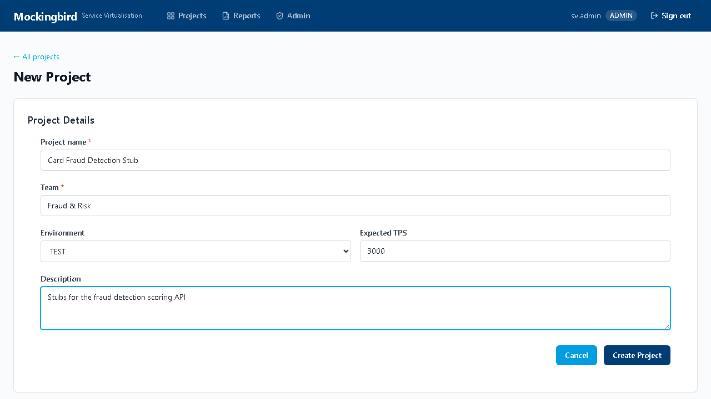
Editing & archiving a project
From a project's detail page, click Edit to change its name, team, environment, TPS target, or description. Click Archive to hide a finished project from the dashboard without deleting anything — archived projects and their stubs stay in the system and can be found again by searching directly.
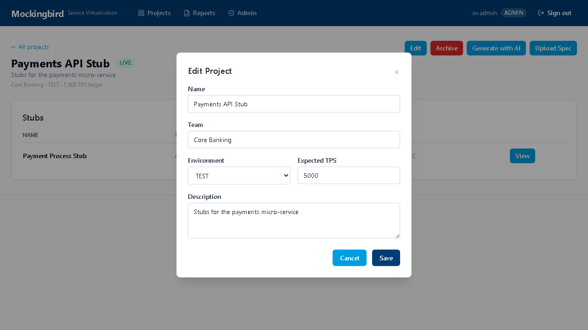

Uploading a spec — single file
Open a project and click Upload Spec. Choose Single spec mode for one file. The format is auto-detected — you never need to tell Mockingbird what kind of file you're giving it.


Uploading specs — batch mode
Have many files at once? Switch to Multiple files (batch) mode. The first choice you'll make is how those files should become stubs — this matters more than it might look, because it decides how many EC2 instances and URLs you get when you deploy.
One stub for all files (recommended default)
Use this when the files describe one downstream system with several
operations — e.g. a client's CreateAdviser and
GetAdvisers endpoints. This is the common case: a real microservice
usually exposes several endpoints behind one base URL, so its stub should too.
Request/response pairs (e.g. *_Request_*.txt / *_Response_*.txt)
are detected and paired automatically — you don't need to pair them by hand, and you
don't need to zip them yourself either.
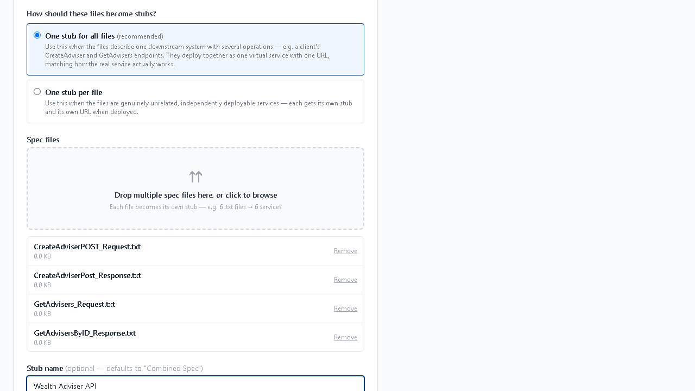
One stub per file
Switch to this mode only when the files are genuinely unrelated, independently deployable services — e.g. you're setting up stubs for three completely different downstream dependencies in one go. Each file (or matched request/response pair) becomes its own separate stub with its own URL when deployed.
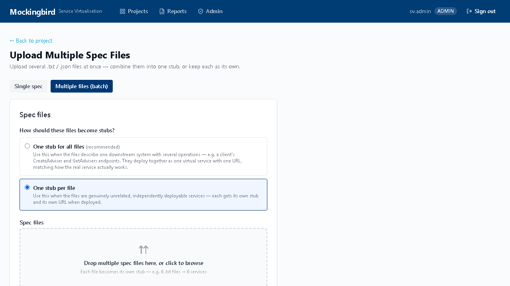
- One file with multiple endpoints (a Postman collection or OpenAPI spec) always becomes one stub serving all those endpoints, regardless of which batch mode you pick.
- In "one stub per file" mode, a bad file doesn't block the rest of the batch — each item succeeds or fails independently.
Supported spec formats
| Format | File type | Notes |
|---|---|---|
| Raw HTTP pair (Level 1 / 2) | .txt | Simple or multi-scenario request/response captures |
| Stateful multi-step | .txt | Sequences like login → fetch → logout |
| CA LISA HTTP capture | .txt (pair) or .zip | Auto-paired if request/response are separate files |
| Postman collection | .json | Export as Collection v2.1 with saved responses |
| OpenAPI / Swagger | .yaml / .json | Must start with openapi: or swagger: |
| Kafka | .json | _mockingbird_kafka native format |
| IBM MQ | .json | _mockingbird_mq native format — consumer-reply or producer |
| AsyncAPI | .yaml / .json | Must start with asyncapi: |
Full field-level examples for each format are in LOCAL_DEVELOPMENT.md ↗ Part C.
Generating stubs with AI
No spec file at all? Describe the API in plain English and Claude drafts a Postman collection you can review before creating stubs from it.
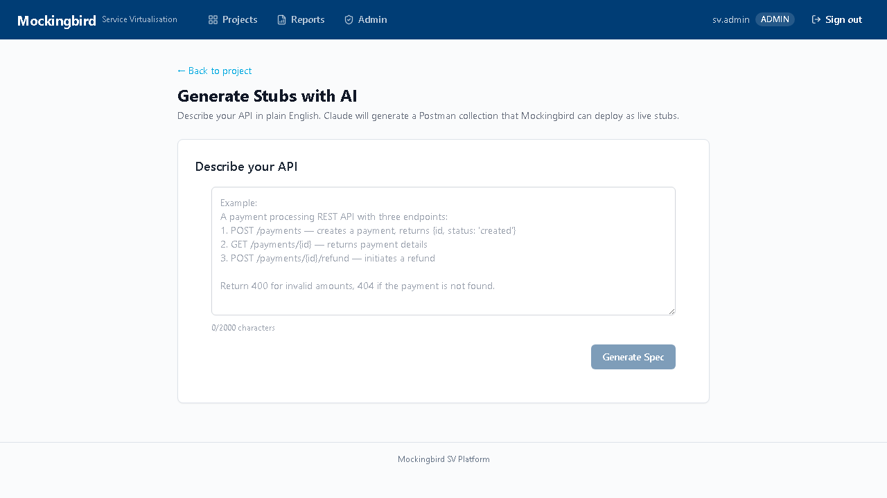
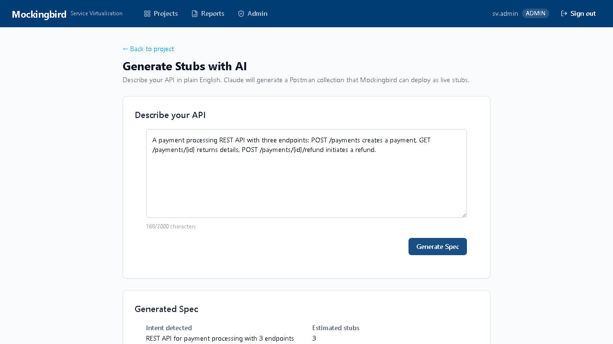
Rate-limited to protect API spend — you'll see a clear message if you hit the hourly limit.
Tracking parse & generate progress
Uploading (or creating stubs from an AI-generated spec) immediately queues parsing and generation in the background — you're taken to a job status page that updates automatically until the stub project is built. Nothing more to do here; it's fully automatic.

Test a stub locally before trusting it
Prove the generated stub behaves correctly on your own machine before deploying it.
- On the project page, once a stub shows a Download Stub Project button, click it. You get a complete, runnable Spring Boot project —
pom.xml,Dockerfile, Java source, and the WireMock mappings already baked in. - Unzip it, then run it directly:
or via Docker:cd stub-engine mvn spring-boot:rundocker build -t my-stub . docker run -p 8080:8080 my-stub - Hit it with
curl, Postman, or your application under test athttp://localhost:8080and confirm it behaves as expected.
Deploying to AWS
Once you're satisfied locally, click Deploy on the project page. This is the one manual step in the whole pipeline — everything after it is automatic: GitLab CI builds the image, Terraform provisions a c6i.2xlarge EC2 instance, health checks poll until it's ready, and you get a live URL and API key. Typically about 4 minutes end to end.
The deployment page
Once deployed, click through to a stub's deployment page for three tabs:
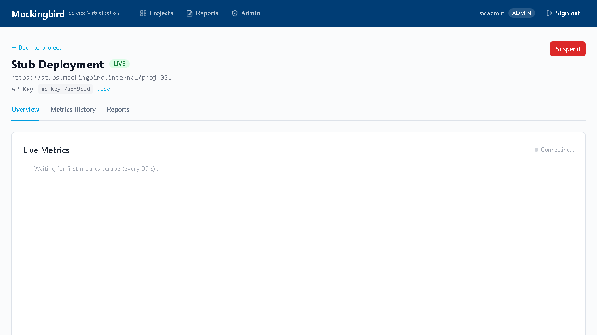
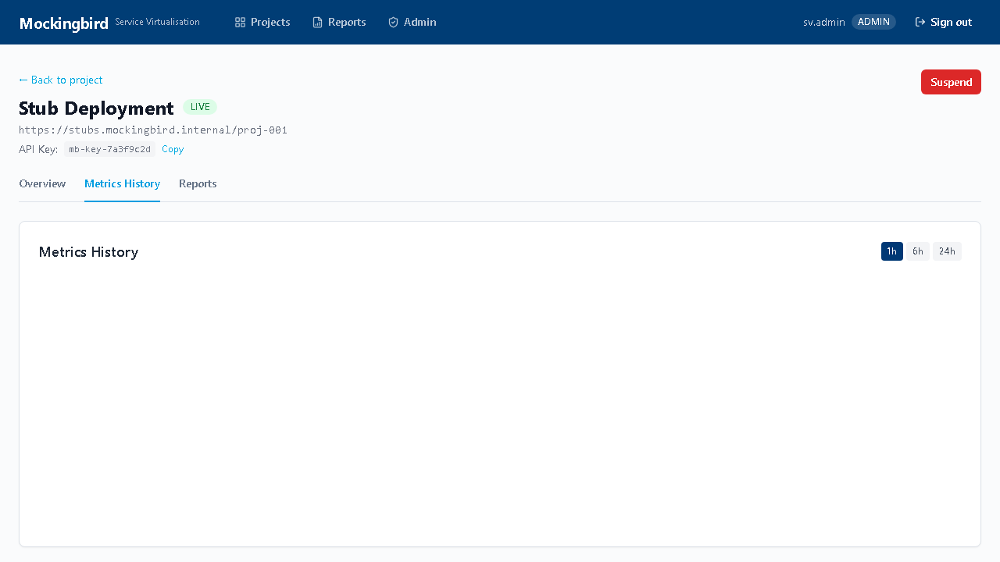
Suspend & redeploy
Done with a deployment for now? Click Suspend — this terminates the EC2 instance (so it stops costing money) but keeps the stub definition. Click Redeploy later and it's live again in about 4 minutes, with no re-upload and no re-parsing needed.
Reports
PDF, Excel, and PowerPoint usage reports are generated per deployment. Reach them two ways: the Reports tab on a deployment page, or the top-level Reports nav link for a cross-project view of everything that's deployed.
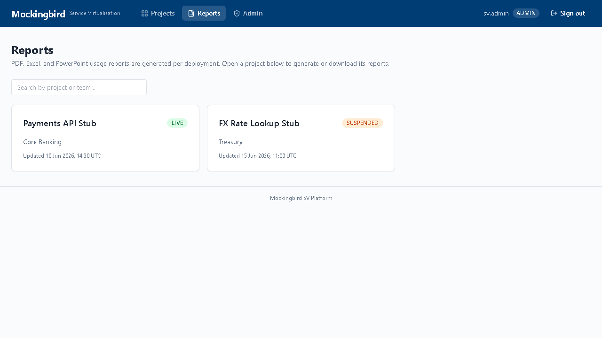
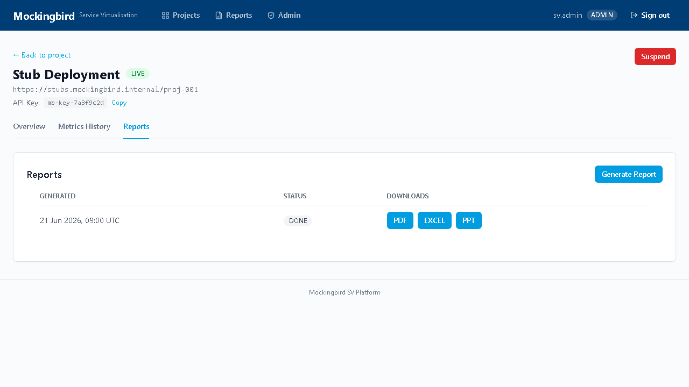
Screenshots captured from the running portal against the current build. If the UI looks different from these images, the app has moved on since this was written — trust the running app over this document.